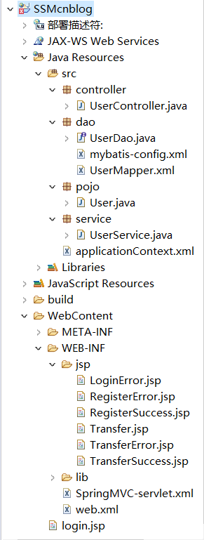

SSM框架即SpringMVC + Spring + MyBati框架集，是一种轻量级的Web开源框架。它们各自在JAVA三层架构中负责的模块如下图所示：
其中，SpringMVC与Spring之间本就存在包含关系，所以它们之间并不需要整合，只需要在web.xml中配置使用即可。而SpringMVC并不和MyBatis直接交互，因此它们之间也不需要进行配置。只有Spring和MyBatis二者之间，我们需要用Spring来将MyBatis整合进来。
因此，我们只需要对web.xml和Spring的配置文件进行一些额外的配置即可。
下面，我们通过实现一个简单的转账系统，来展示SSM框架的整合和使用。
首先新建一个JavaWeb项目，导入SpringMVC、Spring、MyBatis三个框架的jar包和它们之间整合所需要的jar包。
在src目录下创建controller、dao、service、pojo四个包，分别用来存放控制层、持久层、业务层、普通java类的代码。
配置web.xml，使项目加载SpringMVC和Spring。
1 <?xml version="1.0" encoding="UTF-8"?>
2 <web-app xmlns:xsi="http://www.w3.org/2001/XMLSchema-instance" xmlns="http://xmlns.jcp.org/xml/ns/javaee" xsi:schemaLocation="http://xmlns.jcp.org/xml/ns/javaee http://xmlns.jcp.org/xml/ns/javaee/web-app_4_0.xsd" id="WebApp_ID" version="4.0">
3 <display-name>SSM</display-name>
4 <welcome-file-list>
5 <welcome-file>index.html</welcome-file>
6 <welcome-file>index.htm</welcome-file>
7 <welcome-file>index.jsp</welcome-file>
8 <welcome-file>default.html</welcome-file>
9 <welcome-file>default.htm</welcome-file>
10 <welcome-file>default.jsp</welcome-file>
11 </welcome-file-list>
12 <!-- 配置服务器启动时加载SpringMVC的调度器 -->
13 <servlet>
14 <servlet-name>SpringMVC</servlet-name>
15 <servlet-class>org.springframework.web.servlet.DispatcherServlet</servlet-class>
16 <load-on-startup>1</load-on-startup>
17 </servlet>
18 <!-- 配置由调度器处理的URL -->
19 <servlet-mapping>
20 <servlet-name>SpringMVC</servlet-name>
21 <url-pattern>/</url-pattern>
22 </servlet-mapping>
23 <!-- 配置监听器启动Spring -->
24 <listener>
25 <listener-class>org.springframework.web.context.ContextLoaderListener</listener-class>
26 </listener>
27 <!-- 指定Spring配置文件路径 -->
28 <context-param>
29 <param-name>contextConfigLocation</param-name>
30 <param-value>classpath:applicationContext.xml</param-value>
31 </context-param>
32 <!-- 配置过滤器避免中文乱码 -->
33 <filter>
34 <filter-name>characterEncodingFilter</filter-name>
35 <filter-class>org.springframework.web.filter.CharacterEncodingFilter</filter-class>
36 <init-param>
37 <param-name>encoding</param-name>
38 <param-value>UTF-8</param-value>
39 </init-param>
40 </filter>
41 <filter-mapping>
42 <filter-name>characterEncodingFilter</filter-name>
43 <url-pattern>/*</url-pattern>
44 </filter-mapping>
45 </web-app>在WEB-INF中创建SpringMVC配置文件SpringMVC-servlet.xml（也可以将配置文件放到其他位置，但需要在web.xml中指明配置文件的路径）和jsp文件夹，jsp文件夹用来存放jsp页面。
1 <?xml version="1.0" encoding="UTF-8"?>
2 <beans xmlns="http://www.springframework.org/schema/beans"
3 xmlns:xsi="http://www.w3.org/2001/XMLSchema-instance"
4 xmlns:context="http://www.springframework.org/schema/context"
5 xsi:schemaLocation="
6 http://www.springframework.org/schema/beans
7 http://www.springframework.org/schema/beans/spring-beans.xsd
8 http://www.springframework.org/schema/context
9 http://www.springframework.org/schema/context/spring-context.xsd">
10 <!-- 配置需要注解扫描的控制层包 -->
11 <context:component-scan base-package="controller" />
12 <!-- 配置视图解析器 -->
13 <bean class="org.springframework.web.servlet.view.InternalResourceViewResolver">
14 <property name="prefix" value="/WEB-INF/jsp/"/>
15 <property name="suffix" value=".jsp"/>
16 </bean>
17 </beans>在src目录下创建Spring的配置文件applicationContext.xml（文件路径在web.xml中指定），配置Spring并加载MyBatis。
1 <?xml version="1.0" encoding="UTF-8"?>
2 <beans xmlns="http://www.springframework.org/schema/beans"
3 xmlns:xsi="http://www.w3.org/2001/XMLSchema-instance"
4 xmlns:context="http://www.springframework.org/schema/context"
5 xmlns:tx="http://www.springframework.org/schema/tx"
6 xsi:schemaLocation="http://www.springframework.org/schema/beans
7 https://www.springframework.org/schema/beans/spring-beans.xsd
8 http://www.springframework.org/schema/context
9 http://www.springframework.org/schema/context/spring-context.xsd
10 http://www.springframework.org/schema/tx
11 http://www.springframework.org/schema/tx/spring-tx.xsd">
12 <!-- 配置需要注解扫描的业务层包 -->
13 <context:component-scan base-package="service"/>
14 <!-- 配置数据源 -->
15 <bean id="dataSource" class="org.springframework.jdbc.datasource.DriverManagerDataSource">
16 <property name="driverClassName" value="com.mysql.cj.jdbc.Driver"/>
17 <property name="url" value="jdbc:mysql://localhost:3306/user?serverTimezone=Asia/Shanghai"/>
18 <property name="username" value="root"/>
19 <property name="password" value="root"/>
20 </bean>
21 <!-- 配置MyBatis工厂 -->
22 <bean id="sqlSessionFactory" class="org.mybatis.spring.SqlSessionFactoryBean">
23 <property name="dataSource" ref="dataSource"/>
24 <property name="configLocation" value="classpath:dao/mybatis-config.xml"/>
25 </bean>
26 <!-- 配置Spring扫描MyBatis的接口 -->
27 <bean class="org.mybatis.spring.mapper.MapperScannerConfigurer">
28 <property name="basePackage" value="dao"/>
29 <property name="sqlSessionFactoryBeanName" value="sqlSessionFactory"/>
30 </bean>
31 <!-- 添加事务支持 -->
32 <bean id="txManager" class="org.springframework.jdbc.datasource.DataSourceTransactionManager">
33 <property name="dataSource" ref="dataSource"/>
34 </bean>
35 <!-- 开启事务注解扫描 -->
36 <tx:annotation-driven transaction-manager="txManager"/>
37 </beans>在dao包里创建MyBatis的配置文件mybatis-config.xml（文件路径在Spring配置文件中指定），指明MyBatis映射文件的路径。
1 <?xml version="1.0" encoding="UTF-8"?>
2 <!DOCTYPE configuration
3 PUBLIC "-//mybatis.org//DTD Config 3.0//EN"
4 "http://mybatis.org/dtd/mybatis-3-config.dtd">
5 <configuration>
6 <mappers>
7 <mapper resource="dao/UserMapper.xml"/>
8 </mappers>
9 </configuration>在dao包中创建MyBatis的映射文件UserMapper.xml，用来后面实现转账系统时使用。
到了这里，SSM框架环境就已经搭建完成了，可以开始编写代码来实现转账系统了。整合后总的目录结构如下所示：
我们要实现的转账系统很简单，该系统具体的操作流程就是“注册——登录——转账”，用户注册后，默认有100元的余额，然后就可以登陆系统，给指定的用户转账。虽然系统简单，但包含了SSM框架中最基础的部分。
经过分析，我们要实现这样的转账系统，首先需要一个记录用户信息的表，因此我们在数据库中，创建一个user库和一个user表，表定义如下：
1 CREATE TABLE `user` (
2 `id` int(11) NOT NULL AUTO_INCREMENT,
3 `username` varchar(10) CHARACTER SET utf8 COLLATE utf8_general_ci NOT NULL,
4 `password` varchar(10) CHARACTER SET utf8 COLLATE utf8_general_ci NOT NULL,
5 `sum` int(11) NOT NULL DEFAULT 100,
6 PRIMARY KEY (`id`) USING BTREE
7 ) ENGINE = InnoDB AUTO_INCREMENT = 10 CHARACTER SET = utf8 COLLATE = utf8_general_ci ROW_FORMAT = Dynamic;并插入几条初始数据。
在pojo包中，创建一个跟user表字段对应的类User.java，便于我们传递数据。
1 package pojo;
2
3 public class User {
4
5 private int id;
6
7 private String username;
8
9 private String password;
10
11 private int sum;
12
13 public int getId() {
14 return id;
15 }
16
17 public void setId(int id) {
18 this.id = id;
19 }
20
21 public String getUsername() {
22 return username;
23 }
24
25 public void setUsername(String username) {
26 this.username = username;
27 }
28
29 public String getPassword() {
30 return password;
31 }
32
33 public void setPassword(String password) {
34 this.password = password;
35 }
36
37 public int getSum() {
38 return sum;
39 }
40
41 public void setSum(int sum) {
42 this.sum = sum;
43 }
44
45 @Override
46 public String toString() {
47 return "User [id=" + id + ", username=" + username + ", password=" + password + ", sum=" + sum + "]";
48 }
49
50 }在前面创建的MyBatis映射文件UserMapper.xml中，写好需要的SQL语句。
1 <?xml version="1.0" encoding="UTF-8"?>
2 <!DOCTYPE mapper
3 PUBLIC "-//mybatis.org//DTD Mapper 3.0//EN"
4 "http://mybatis.org/dtd/mybatis-3-mapper.dtd">
5 <mapper namespace="dao.UserDao">
6 <select id="selectUserByNameAndPass" resultType="pojo.User" parameterType="pojo.User">
7 select * from user where username = #{username} and password = #{password}
8 </select>
9 <select id="selectUserByName" resultType="pojo.User" parameterType="pojo.User">
10 select * from user where username = #{username}
11 </select>
12 <insert id="addUser" parameterType="pojo.User">
13 insert into user (username,password) values (#{username},#{password})
14 </insert>
15 <update id="updateSumByName" parameterType="pojo.User">
16 update user set sum = #{sum} where username = #{username}
17 </update>
18 </mapper>在dao包中创建UserDao.java接口，编写MyBatis映射接口。
1 package dao;
2
3 import org.apache.ibatis.annotations.Mapper;
4
5 import pojo.User;
6
7 @Mapper
8 public interface UserDao {
9
10 public User selectUserByNameAndPass(User user);
11
12 public int addUser(User user);
13
14 public User selectUserByName(User user);
15
16 public int updateSumByName(User user);
17 }到这里持久层就编写完成了，此时的目录结构如下：
经过分析，该系统需要实现的业务有三个，分别是“登录”、“注册”和“转账”。我们可以在service包下创建UserService.java类，用三个方法来实现这些业务。代码如下：
1 package service;
2
3 import javax.servlet.http.HttpSession;
4
5 import org.springframework.beans.factory.annotation.Autowired;
6 import org.springframework.stereotype.Service;
7 import org.springframework.transaction.annotation.Transactional;
8
9 import dao.UserDao;
10 import pojo.User;
11
12 @Service
13 public class UserService {
14
15 @Autowired
16 private UserDao userDao;
17
18 @Autowired
19 private HttpSession httpSession;
20
21 public boolean login(User user) {
22 //验证账号密码
23 user = userDao.selectUserByNameAndPass(user);
24 if (user == null) {
25 return false;
26 }
27 //设置Session
28 httpSession.invalidate();
29 httpSession.setAttribute("username", user.getUsername());
30 return true;
31 }
32
33 public boolean register(User user) {
34 //检查用户名是否重复
35 if (userDao.selectUserByName(user) != null) {
36 return false;
37 }
38 userDao.addUser(user);
39 return true;
40 }
41
42 @Transactional
43 public boolean transfer(User user_in) {
44 //检查是否自己向自己转账
45 if (((String) httpSession.getAttribute("username")).equals(user_in.getUsername())) {
46 return false;
47 }
48 //检查转账金额是否为正数
49 int transferSum = user_in.getSum();
50 if (transferSum <= 0) {
51 return false;
52 }
53 //检查转账目标用户是否存在
54 user_in = userDao.selectUserByName(user_in);
55 if (user_in == null) {
56 return false;
57 }
58 //检查用户是否有足够的余额进行转账
59 User user_out = new User();
60 user_out.setUsername((String) httpSession.getAttribute("username"));
61 user_out = userDao.selectUserByName(user_out);
62 int remainSum = user_out.getSum() - transferSum;
63 if ( remainSum < 0) {
64 return false;
65 }
66 //开始转账
67 user_out.setSum(remainSum);
68 userDao.updateSumByName(user_out);
69 user_in.setSum(user_in.getSum() + transferSum);
70 userDao.updateSumByName(user_in);
71 return true;
72 }
73 }跟业务层一样，控制层也需要三个控制器来调用业务层。我们在controller包中创建UserController.java类，同样需要编写三个方法，代码如下：
1 package controller;
2
3 import org.springframework.beans.factory.annotation.Autowired;
4 import org.springframework.stereotype.Controller;
5 import org.springframework.web.bind.annotation.RequestMapping;
6
7 import pojo.User;
8 import service.UserService;
9
10 @Controller
11 public class UserController {
12
13 @Autowired
14 private UserService userService;
15
16 @RequestMapping("/login")
17 public String login(User user) {
18 if(!userService.login(user)) {
19 return "LoginError";
20 }
21 return "Transfer";
22 }
23
24 @RequestMapping("/register")
25 public String register(User user) {
26 if(userService.register(user)) {
27 return "RegisterSuccess";
28 }
29 return "RegisterError";
30 }
31
32 @RequestMapping("/transfer")
33 public String transfer(User user) {
34 if (userService.transfer(user)) {
35 return "TransferSuccess";
36 }
37 return "TransferError";
38 }
39 }根据控制层中的定义，我们总共需要编写七个jsp页面，分别如下：
登录注册页面login.jsp：
1 <%@ page language="java" contentType="text/html; charset=UTF-8"
2 pageEncoding="UTF-8"%>
3 <!DOCTYPE html>
4 <html>
5 <head>
6 <meta charset="UTF-8">
7 <title>登录</title>
8 </head>
9 <body>
10 <form action="${pageContext.request.contextPath}/login" method="post">
11 <table>
12 <tr>
13 <td align="right">用户名：</td>
14 <td><input type="text" name="username"/></td>
15 </tr>
16 <tr>
17 <td align="right">密码：</td>
18 <td><input type="password" name="password"/></td>
19 </tr>
20 <tr>
21 <td align="center" colspan="2"><input type="submit" value="登录"/><input type="submit" value="注册" formaction="${pageContext.request.contextPath}/register"/></td>
22 </tr>
23 </table>
24 </form>
25 </body>
26 </html>登录失败页面LoginError.jsp：
1 <%@ page language="java" contentType="text/html; charset=UTF-8"
2 pageEncoding="UTF-8"%>
3 <!DOCTYPE html>
4 <html>
5 <head>
6 <meta charset="UTF-8">
7 <title>登录失败</title>
8 </head>
9 <body>
10 用户名或密码错误！
11 </body>
12 </html>登录成功后的转账页面Transfer.jsp：
1 <%@ page language="java" contentType="text/html; charset=UTF-8"
2 pageEncoding="UTF-8"%>
3 <!DOCTYPE html>
4 <html>
5 <head>
6 <meta charset="UTF-8">
7 <title>转账</title>
8 </head>
9 <body>
10 <form action="${pageContext.request.contextPath}/transfer" method="post">
11 <table>
12 <tr>
13 <td align="center" colspan="2">欢迎你！${user.username}</td>
14 </tr>
15 <tr>
16 <td align="right">用户名：</td>
17 <td><input type="text" name="username"/></td>
18 </tr>
19 <tr>
20 <td align="right">金额：</td>
21 <td><input type="text" name="sum"/></td>
22 </tr>
23 <tr>
24 <td/>
25 <td align="right"><input type="submit" value="转账"/></td>
26 </tr>
27 </table>
28 </form>
29 </body>
30 </html>注册失败页面RegisterError.jsp：
1 <?xml version="1.0" encoding="UTF-8" ?>
2 <!DOCTYPE html PUBLIC "-//W3C//DTD XHTML 1.0 Transitional//EN" "http://www.w3.org/TR/xhtml1/DTD/xhtml1-transitional.dtd">
3 <html xmlns="http://www.w3.org/1999/xhtml">
4 <head>
5 <%@ page language="java" contentType="text/html; charset=UTF-8"
6 pageEncoding="UTF-8"%>
7 <meta http-equiv="Content-Type" content="text/html; charset=UTF-8" />
8 <title>注册失败</title>
9 </head>
10 <body>
11 注册失败！
12 </body>
13 </html>注册成功页面RegisterSuccess.jsp：
1 <?xml version="1.0" encoding="UTF-8" ?>
2 <!DOCTYPE html PUBLIC "-//W3C//DTD XHTML 1.0 Transitional//EN" "http://www.w3.org/TR/xhtml1/DTD/xhtml1-transitional.dtd">
3 <html xmlns="http://www.w3.org/1999/xhtml">
4 <head>
5 <%@ page language="java" contentType="text/html; charset=UTF-8" pageEncoding="UTF-8"%>
6 <meta http-equiv="Content-Type" content="text/html; charset=UTF-8" />
7 <title>注册成功</title>
8 </head>
9 <body>
10 注册成功！
11 </body>
12 </html>转账失败页面TransferError.jsp：
1 <?xml version="1.0" encoding="UTF-8" ?>
2 <!DOCTYPE html PUBLIC "-//W3C//DTD XHTML 1.0 Transitional//EN" "http://www.w3.org/TR/xhtml1/DTD/xhtml1-transitional.dtd">
3 <html xmlns="http://www.w3.org/1999/xhtml">
4 <head>
5 <%@ page language="java" contentType="text/html; charset=UTF-8"
6 pageEncoding="UTF-8"%>
7 <meta http-equiv="Content-Type" content="text/html; charset=UTF-8" />
8 <title>转账失败</title>
9 </head>
10 <body>
11 转账失败！
12 </body>
13 </html>转账成功页面TransferSuccess.jsp：
1 <?xml version="1.0" encoding="UTF-8" ?>
2 <!DOCTYPE html PUBLIC "-//W3C//DTD XHTML 1.0 Transitional//EN" "http://www.w3.org/TR/xhtml1/DTD/xhtml1-transitional.dtd">
3 <html xmlns="http://www.w3.org/1999/xhtml">
4 <head>
5 <%@ page language="java" contentType="text/html; charset=UTF-8"
6 pageEncoding="UTF-8"%>
7 <meta http-equiv="Content-Type" content="text/html; charset=UTF-8" />
8 <title>转账成功</title>
9 </head>
10 <body>
11 转账成功！
12 </body>
13 </html>到这里，该转账系统基本实现，最终的目录结构如下：

运行截图：
可见admin账户成功向ysy账户转账50元。